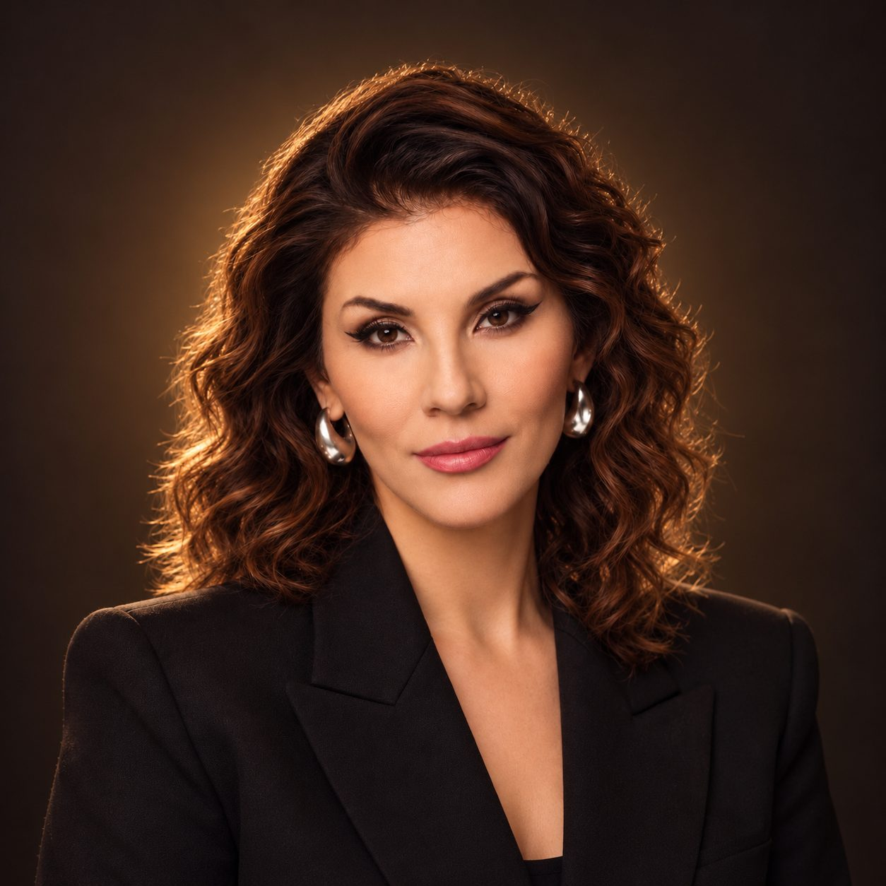
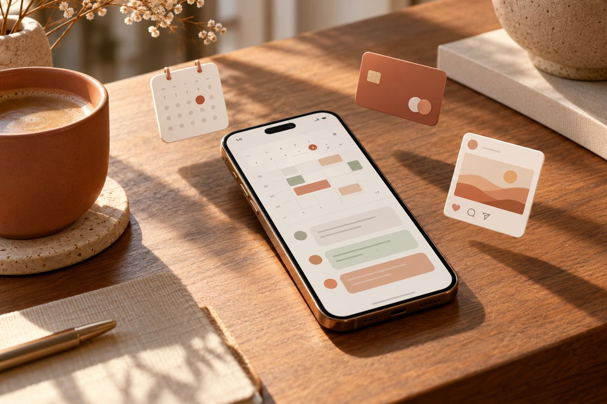
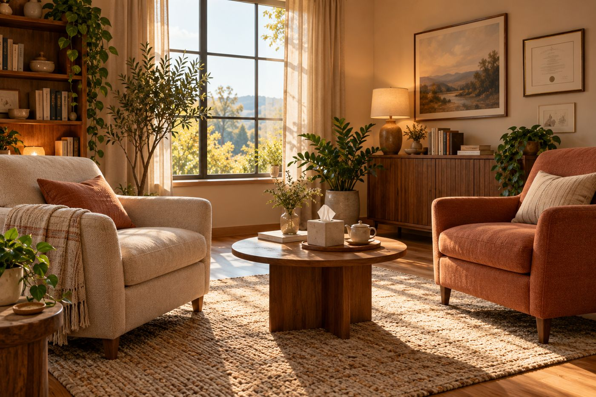

2-й терапевтический вечер
Как выйти из ощущения «со мной что‑то не так» и перестать жить из недостаточности.
Почему мы годами не меняем жизнь, хотя очень хотим.

Что было вчера
Что будет сегодня
Игра продолжается
Вчера вы собрали 4 цифры. Сегодня будет ещё 4, последняя – в самом конце.
- 1Запишите каждую цифру или сделайте снимок экрана
- 2В конце эфира я дам ссылку на страницу с колесом
- 3Введёте 8 цифр подряд: вчерашние 4 и сегодняшние 4
- 4Крутите колесо и получаете один из подарков
Какие подарки можно получить


Это тоже входит
Аудиопрактики с доступом на 1 месяц


Анна Саба
Врач‑психиатр, психотерапевт
- 10+ лет практики
- 7 000+ клиентов
- 150+ специалистов обучила
- Московская медицинская академия им. И. М. Сеченова
- НМИЦ психиатрии и наркологии им. В. П. Сербского
- Факультет непрерывного медицинского образования РУДН

Вспомним виды ТДО
Это поможет нам дальше. Если вы не были вчера, посчитайте, сколько баллов по ТДО у вас.

10 видов ТДО
ТДО – травматический детский опыт
Насилие
Пренебрежение

Неблагополучие в семье
«Со мной что‑то не так»
Это яд, который отравляет все сферы жизни

Это не мысли. Это состояние.
Мы ощущаем их как состояние, которое отнимает жизненную энергию
Самые частые ощущения
Для тех, кто был невнимателен вчера – вот 4 цифры со вчерашнего эфира
Мы все сталкиваемся с этими ощущениями в кризисные моменты
Но у многих это ощущение становится постоянным. Его уже невозможно отличить от себя: оно как вторая кожа.

Откуда это берётся
Из травмы нелюбви: когда в детстве любовь нужно было заслужить

Ребёнок делает вывод: «Меня есть за что не любить»
И во взрослой жизни продолжает доказывать, что он достоин

Почему люди не меняют свою жизнь?
Даже когда очень хотят и всё понимают
Потому что в этом есть вторичная выгода
Бессознательная выгода оставить всё как есть
Вторичная выгода – это удобно

Проще сделать вид, что «мне это не надо»
чем попросить мужа оплатить обучение и начать этот разговор

Найдем вашу вторичную выгоду
Ответы пишите в чате, отвечайте честно
И человек ждёт
Пока не ударится о дно

Жизнь – это движение
Листья опадают и весной появляются снова. Росток пробивается через асфальт. Ребёнок растёт во взрослого. Всё живое меняется.

Если вы не идёте в развитие сами, жизнь начинает толкать
И часто не самыми приятными способами
Как жизнь толкает к изменениям
1. Как проявляется в деньгах
2. Как в отношениях
3. Если ударило по здоровью
Это уже очень серьёзный знак: остановитесь и подумайте, куда вы идёте
Многие из тех, кто выходит из тяжёлой болезни, меняют всё
Окружение, профессию, мышление. И начинают жить совсем другую жизнь.

Когда вы принимаете жёсткое решение изменить свою жизнь
токсичного партнёра
убыточный бизнес
окружение
новую профессию
и начать меняться
И почти сразу начинается откат
Жизнь подкидывает проверочку
Это не знак судьбы, что нужно остаться
Это ловушка. Проверка, насколько твёрдо ваше намерение
Поведётесь на мягкость и вернётесь – будет в 2 раза тяжелее, пока не пройдёте урок
Приняли решение – идите вперёд и не оглядывайтесь
Пространство уважает тех, кто умеет сжигать мосты без сожаления и шагать вперёд
деньги, отношения или здоровье
Пока вы внутри пузыря недостаточности
Вы не видите свои вторичные выгоды и не понимаете, как они работают
Выгоды схлопываются, когда вы перерабатываете ТДО
Не один запрос, а системно, раз за разом

Психологи, которые владеют ДПДГ, но не учились на 3.0, не работают с ТДО
Они работают с запросом клиента
Работа «от запроса» – это мимо
Клиент приходит: «У меня плохая самооценка». Психолог работает с самооценкой, а причина остаётся в детстве.
«Все врут» – доктор Хаус
Моя система ДПДГ 3.0
Что происходит, когда ТДО проработан

Ещё одна черта психически здорового человека
Не обижается, когда выбирают не его
«Меня не выбрали, значит, я хуже»
«Это их выбор. Со мной всё в порядке»
История с дня рождения
Подруга приехала ко мне на день рождения на пару часов и говорит: «Меня ждёт мужчина, я поеду»
Я перекрестила её и отправила: «Езжай, конечно!»

Половина людей в такой ситуации уходит в обиду

Почему мы обижаемся, когда выбирают не нас?
Выбор человека в моменте не означает, что вас не любят и ваша дружба ничего не стоит
Обида «выбрали не меня» – это отсутствие самоценности
Тогда вы постоянно доказываете свою ценность
Что такое защищённость
Когда под ногами что‑то есть, можно расслабиться и жить спокойно

Пример: 18 лет в одной компании
Начинают сокращать людей вокруг вас. Приходит сообщение от начальника: «Зайди ко мне».

Пока вы идёте к кабинету
А начальник говорит: «Ты будешь руководить отделом, зарплата в 5 раз больше»
И за секунду он снова лучший человек на свете

Когда незащищённо – негатив. Когда защищённо – позитив.
Человек, который опирается только на внешнее, всё время качается
Защищённость – это внутреннее чувство
Оно не зависит от денег, партнёра и работы. Оно закладывается в детстве.
Опираться можно только на внутреннее
«Со мной всё в порядке. Я справлюсь. Я беру свою жизнь в свои руки.»
С опорой на себя живут люди, которые проработали ТДО
Так живу я, мои студенты и выпускники. Это будет с теми, кто пройдет программу ПКТ.

Практика «Моя лучшая жизнь»
Сейчас покажу вашу лучшую жизнь и то, как соединиться с ней

Программа «Психолог краткосрочной терапии»
Как за 6 месяцев:
- Проработать весь свой ТДО
- Научиться помогать себе и близким
- Освоить востребованную профессию с доходом от 300 000 ₽ в месяц
- Получить диплом о переподготовке

Ваш путь по программе: 3 модуля
Основа терапии ДПДГ
Как работает метод и нервная система, этика, протокол из 8 фаз, ДПДГ 2.0
Комплексная травма и защиты
ДПДГ 3.0, гипнотерапия, системная терапия, сопротивление, группы, продвижение
Терапия основных неврозов
ПТСР и ОКР, панические атаки и тревога, зависимости, пары и дети
Диплом и первые клиенты
Своя проработка закончена, «Помощник психолога в кармане» ведёт соцсети и запись
Бонус 3 потока: «Помощник психолога в кармане»
Снимает 95% рутины. Идёт бонусом тем, кто записывается на 3 поток ПКТ

Ваш доход, работая 3 дня в неделю
Сколько это стоит на самом деле
Ваша цена при записи на эфире
Дальше – зачисление, обучение и ваша новая жизнь

Как записаться
- 1Вы оставляете предоплату на эфире 5 000 ₽ (ссылка в чате). Предоплата фиксирует самую низкую цену (350 000 ₽) + 2 бонуса («Помощник психолога в кармане» и «Быстрый старт сильного терапевта»)
- 2Проходите адмиссию (собеседование)
- 3Если всё хорошо, вам приходит приглашение к зачислению
Что такое адмиссия?
Мы ответственно подходим к отбору обучающихся
Берём только тех, у кого точно получится
Таким образом собирается сильное окружение и повышается качество нашей работы

Если после адмиссии вам пришёл отказ или вы поняли, что программа вам не подходит – 5 000 ₽ возвращаются
Условия эфира
Предоплата 5 000 ₽ закрепляет:
5 минут
Ссылка на предоплату в чате
1% людей живут жизнью мечты, 99% годами ходят по кругу
И у них ничего не меняется
каждый
день
Или вы сворачиваете в новую реальность
После эфира действуют 48 часов
Потом цена 375 000 ₽, бонусы сгорают
Колесо подарков
- 1Откройте ссылку в чате
- 2Введите 8 цифр подряд: 4 вчерашние и 4 сегодняшние
- 3Нажмите «Крутить» и оставьте контакты
- 4Отдел заботы свяжется с вами и выдаст подарок
Что может выпасть
«Деньги база»
«Стрессоустойчивость про»
«Твоя лучшая жизнь»
Спасибо, что были со мной два вечера
Увидимся на ПКТ